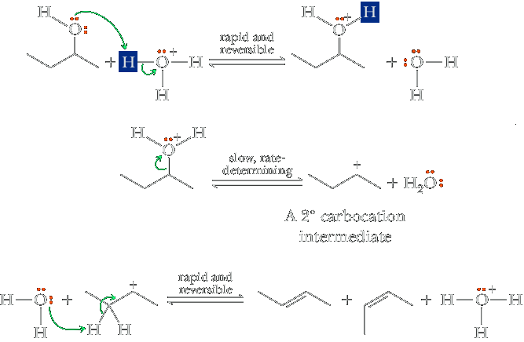
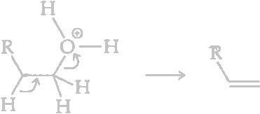
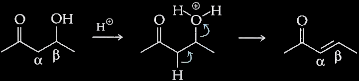

Dehydration of Alcohols
The elimination of water (dehydration) from alcohols takes place under acidic conditions and thus differs from the elminations of hydrogen halides. As we've learned dehydration is facilitaed by acid because protonation of the hydroxyl group effectively converts this leaving group from hydroxide ion into water. Becuase H3O+ is a stronge acid than H2O, its conjugate base (H2O) is a better leaving group than OH−.
Whenever a stable carbocation is produced by dehydration of a protonaed alcohol, an E1 elimination can occur. The function of the acidic reagent is to convert the hydroxyl group to a better leaving group by protonation. Zaitsev’s rule is followed; that is, the predominant product is the most stable (usually the most highly substituted) alkene. The mechanism is the reverse of acid-catalyzed hydration of an alkene.
Because an unstable primary carbocation would be formed in the E1 dehydration of a primary alcohol, the acid-catalyzed E1 elimination through a carbocation is difficult. Instead, a proton is lost from an adjacent carbon at the same time as water is lost. This allows for the formation of an alkene without the intermediate formation of an unstable carbocation.
When isomeric alkenes are possible, the major product is generally the more substituted alkene (Zaitsev’s rule). Rearrangements are common with secondary alcohols and with primary alcohols with extensive β-branching. The mechanism is the reverse of acid-catalyzed hydration of an alkene, involving initial protonation of the −OH group followed by loss of water to give a carbocation, which loses a proton to give an alkene.
 2-Butanol (racemic) | 85% H3PO4 ⟶ heat | CH3CH=CHCH3 (E and Z) 2-Butene (80%) | CH3CH2CH=CH2 1-Butene (20%) |
Dehydration is particularly easy when a conjugated double bond is formed. For example, an alcohol that bears a carbonyl group two carbons away (a β-hydroxyaldehyde or -ketone) readily undergoes dehydration with formation of an α,β-unsaturated carbonyl compound.
